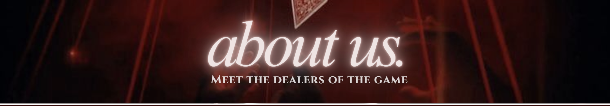
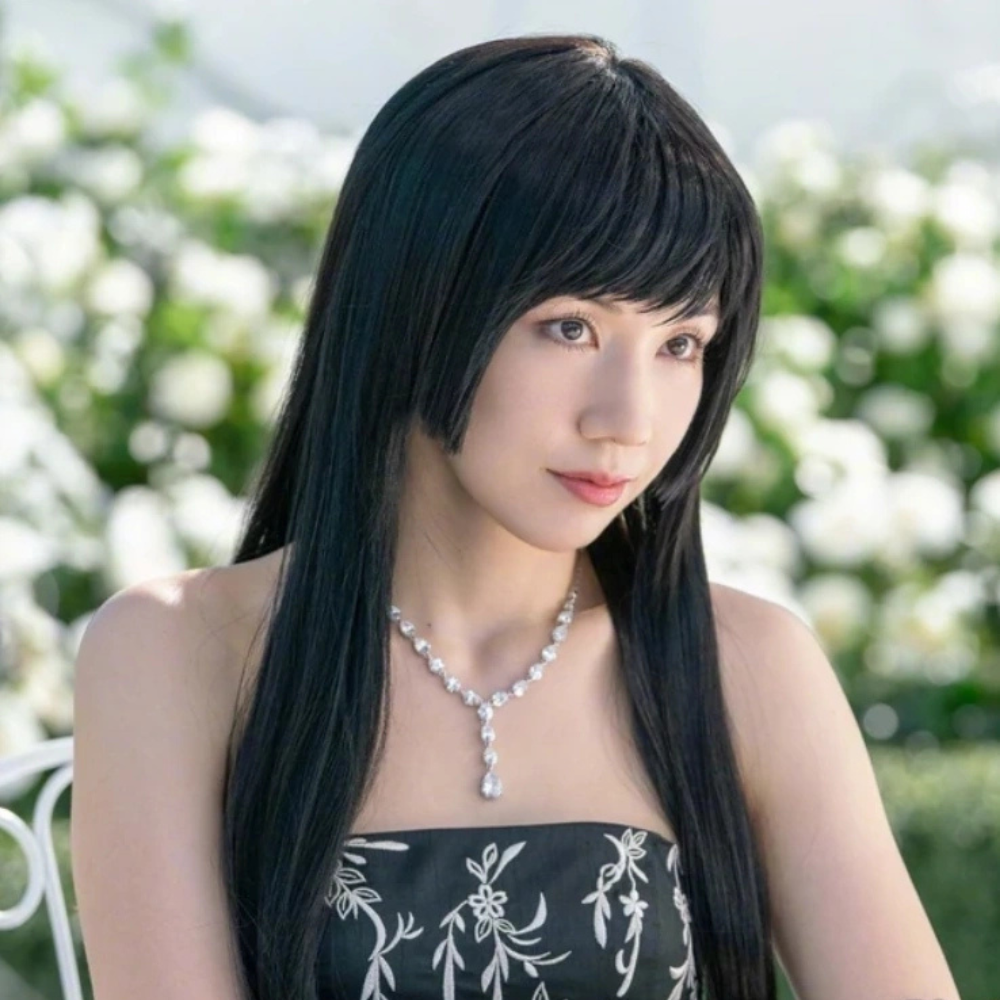

Ryōhei Arisu (有栖 良平, Arisu Ryouhei) is the protagonist of Alice in Borderland. He is played by Kento Yamazaki in the live action, and his speciality is Hearts. Arisu is a tall and lanky young man with shaggy black hair that slightly covers his eyes. In the original world, Arisu is a moody, unemployed teenager who spends his time indulging in his gaming addiction. He is best friends with Dakichi Karube and Chota Segawa—and the three of them gets transported to the Borderlands together.
Mira Kano (加納 未来, Kanou Mirai) is one of the antagonists in Alice in Borderland, played by Riisa Naka. She is a high-ranking member of "The Beach" who serves as the Queen of Hearts. She psychologically challenged players during her game of croquet. She is a manipulative, graceful character who is known for her sadistic smile. For most of her screen time, she seems to enjoy seeing other people's suffering. She is good at reading others, becoming useful during the Queen of Hearts game where she is almost successful in manipulating Arisu into admitting he quits the game.

